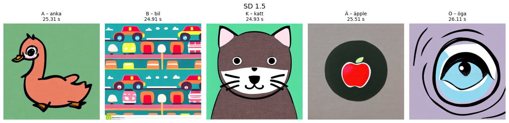
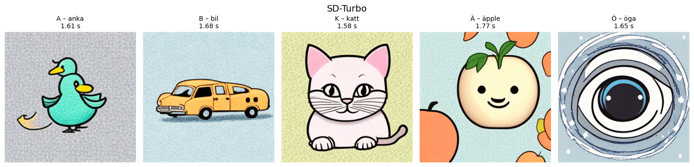
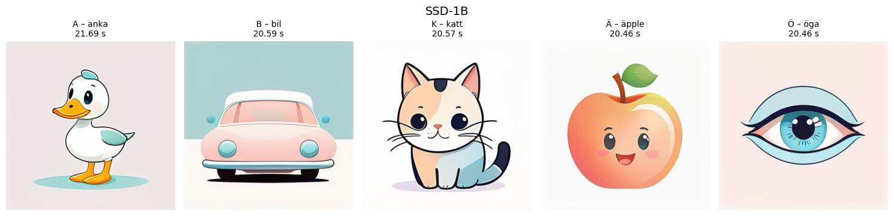
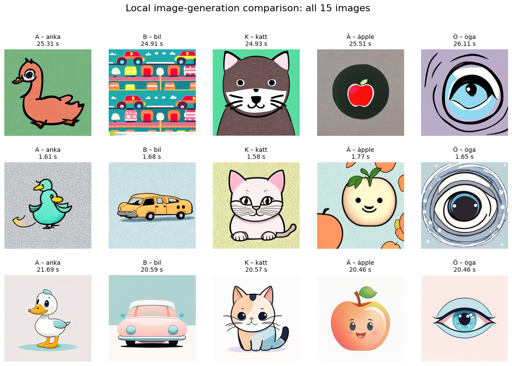

Local image-generation model comparison¶
One of my projects is to represent Swedish vocabulary with simple flashcard illustrations. Whenever I learn a new word, I would like to generate a small, recognisable image that can later be used in a flashcard.
Large hosted image models can usually produce better illustrations, but this notebook explores whether smaller local, free image-generation models are good enough for this purpose.
Goal¶
Compare several local image-generation models on the same small flashcard task and record:
how to install and download each model;
whether it runs successfully on my Mac;
generation time;
image quality and recognisability;
memory or numerical-precision problems encountered during testing.
The main comparison uses three models:
Stable Diffusion 1.5
SD-Turbo
SSD-1B
FLUX.1-schnell is also documented as an additional experiment because it proved too large for this machine.
Computer and software setup¶
The local image-generation experiments in this notebook were run on:
Hardware¶
Computer: MacBook Pro
Chip: Apple M4
CPU: 10 cores (4 performance + 6 efficiency)
Unified memory: 24 GB
Architecture: ARM64
Storage: 1 TB SSD
Software¶
Operating system: macOS 15.7.7
Python: 3.13.2
PyTorch: 2.13.0
Diffusers: 0.39.0
Transformers: 5.14.1
PyTorch MPS backend: available
The models are executed locally using PyTorch’s MPS backend, which allows PyTorch to use the Apple Silicon GPU.
Hardware and software versions are recorded because model compatibility, memory consumption, numerical precision, and generation speed can differ substantially between systems.
1. Environment and required packages¶
Activate the project virtual environment first, then install the packages below in Terminal.
source .venv/bin/activate
python -m pip install -U \
torch \
torchvision \
diffusers \
transformers \
accelerate \
safetensors \
pillow \
pandas \
matplotlib \
ipython \
huggingface_hub
The Hugging Face CLI is used to download model files separately in Terminal. This keeps downloading separate from model loading inside Jupyter.
2. Imports and hardware check¶
The imports below are shared by all model experiments.
from pathlib import Path
from time import perf_counter
import gc
import pandas as pd
import matplotlib.pyplot as plt
from PIL import Image, ImageStat
from IPython.display import display
import torch
from diffusers import (
StableDiffusionPipeline,
StableDiffusionXLPipeline,
AutoPipelineForText2Image,
)
[transformers] `Siglip2ImageProcessorFast` is deprecated. The `Fast` suffix for image processors has been removed; use `Siglip2ImageProcessor` instead.
# Apple Silicon can use the MPS backend in PyTorch.
device = "mps" if torch.backends.mps.is_available() else "cpu"
print("PyTorch version:", torch.__version__)
print("MPS available:", torch.backends.mps.is_available())
print("MPS built:", torch.backends.mps.is_built())
print("Selected device:", device)
PyTorch version: 2.13.0
MPS available: True
MPS built: True
Selected device: mps
5. Model comparison¶
Each model section follows the same sequence:
download the model in Terminal;
load the model from the local Hugging Face cache;
generate the same five images with
generate_test_images();inspect the images and runtime;
record any model-specific observations.
Model 1 — Stable Diffusion 1.5¶
Download¶
Run in Terminal:
hf download stable-diffusion-v1-5/stable-diffusion-v1-5
Load¶
On this Mac, float16 on MPS produced black images. Using float32 fixed the problem, so this notebook uses float32 for SD 1.5.
The legacy safety checker is disabled here because it repeatedly produced false-positive NSFW detections for harmless educational flashcard prompts.
sd15 = StableDiffusionPipeline.from_pretrained(
"stable-diffusion-v1-5/stable-diffusion-v1-5",
torch_dtype=torch.float32,
local_files_only=True,
safety_checker=None,
requires_safety_checker=False,
)
sd15 = sd15.to(device)
# Attention slicing can reduce peak memory usage.
sd15.enable_attention_slicing()
Prepare SD 1.5 jobs¶
This cell only prepares prompts, generation settings, and output paths. It does not run the model.
sd15_jobs = prepare_generation_jobs(
model_name="SD 1.5",
output_folder="model_test_outputs/sd15",
num_inference_steps=25,
guidance_scale=7.5,
use_negative_prompt=True,
)
sd15_jobs
Run SD 1.5¶
The next cell is the expensive step. The run_model() call is where all five images are generated.
sd15_runs = run_model(
pipe=sd15,
generation_jobs=sd15_jobs,
)
save_model_outputs(sd15_runs)
sd15_results = get_results_summary(sd15_runs)
sd15_results
| model | letter | word | object_english | runtime_sec | image_path | |
|---|---|---|---|---|---|---|
| 0 | SD 1.5 | A | anka | duck | 25.31 | model_test_outputs/sd15/A_anka.png |
| 1 | SD 1.5 | B | bil | car | 24.91 | model_test_outputs/sd15/B_bil.png |
| 2 | SD 1.5 | K | katt | cat | 24.93 | model_test_outputs/sd15/K_katt.png |
| 3 | SD 1.5 | Ä | äpple | apple | 25.51 | model_test_outputs/sd15/Ä_äpple.png |
| 4 | SD 1.5 | Ö | öga | eye | 26.11 | model_test_outputs/sd15/Ö_öga.png |
Show the images¶
show_results_horizontal(sd15_results)

release_pipeline(sd15)
del sd15
Observation¶
With torch.float16 on MPS, SD 1.5 produced black images on this machine. Switching to torch.float32 fixed the problem.
The generated objects are recognisable, but the illustration quality is relatively abstract compared with the stronger models tested later.
Model 2 — SD-Turbo¶
SD-Turbo is included mainly as a speed-oriented model. Unlike the other models, it is designed to work with very few inference steps.
Download¶
Run in Terminal:
hf download stabilityai/sd-turbo
Load¶
For stability on this Mac, the example below uses float32.
sd_turbo = AutoPipelineForText2Image.from_pretrained(
"stabilityai/sd-turbo",
torch_dtype=torch.float32,
local_files_only=True,
)
sd_turbo = sd_turbo.to(device)
/Users/changliu/Documents/data-lab/.venv/lib/python3.13/site-packages/huggingface_hub/utils/_validators.py:205: UserWarning: The `local_dir_use_symlinks` argument is deprecated and ignored in `hf_hub_download`. Downloading to a local directory does not use symlinks anymore.
warnings.warn(
You have disabled the safety checker for <class 'diffusers.pipelines.stable_diffusion.pipeline_stable_diffusion.StableDiffusionPipeline'> by passing `safety_checker=None`. Ensure that you abide to the conditions of the Stable Diffusion license and do not expose unfiltered results in services or applications open to the public. Both the diffusers team and Hugging Face strongly recommend to keep the safety filter enabled in all public facing circumstances, disabling it only for use-cases that involve analyzing network behavior or auditing its results. For more information, please have a look at https://github.com/huggingface/diffusers/pull/254 .
Prepare SD-Turbo jobs¶
This cell only prepares prompts, generation settings, and output paths. It does not run the model.
sd_turbo_jobs = prepare_generation_jobs(
model_name="SD-Turbo",
output_folder="model_test_outputs/sd_turbo",
num_inference_steps=2,
guidance_scale=0.0,
use_negative_prompt=False
)
sd_turbo_jobs
Run SD-Turbo¶
The next cell is the expensive step. The run_model() call is where all five images are generated.
sd_turbo_runs = run_model(
pipe=sd_turbo,
generation_jobs=sd_turbo_jobs,
)
save_model_outputs(sd_turbo_runs)
sd_turbo_results = get_results_summary(sd_turbo_runs)
sd_turbo_results
| model | letter | word | object_english | runtime_sec | image_path | |
|---|---|---|---|---|---|---|
| 0 | SD-Turbo | A | anka | duck | 1.61 | model_test_outputs/sd_turbo/A_anka.png |
| 1 | SD-Turbo | B | bil | car | 1.68 | model_test_outputs/sd_turbo/B_bil.png |
| 2 | SD-Turbo | K | katt | cat | 1.58 | model_test_outputs/sd_turbo/K_katt.png |
| 3 | SD-Turbo | Ä | äpple | apple | 1.77 | model_test_outputs/sd_turbo/Ä_äpple.png |
| 4 | SD-Turbo | Ö | öga | eye | 1.65 | model_test_outputs/sd_turbo/Ö_öga.png |
Mark: The change of parameters does not change the picture quality much.
Show the images¶
show_results_horizontal(sd_turbo_results)

release_pipeline(sd_turbo)
del sd_turbo
Observation¶
SD-Turbo uses only a few denoising steps, so it is useful for comparing speed against image quality.
Because guidance_scale=0.0 is used, the shared negative prompt is not included in this benchmark.
Model 3 — SSD-1B¶
SSD-1B is a distilled SDXL-family model and is the strongest practical local candidate tested so far.
Download¶
Run in Terminal:
hf download segmind/SSD-1B
Why the black images returned¶
The failed run used an float16 UNet and text encoders on MPS while only the VAE was float32. Its output included the warning invalid value encountered in cast; the generated array contained non-finite values, which became zero-valued (black) pixels during conversion to uint8. Loading the VAE separately did not stabilize the rest of the half-precision pipeline.
This benchmark therefore loads the complete SSD-1B pipeline in float32. It uses more unified memory but is the reliable configuration for this machine. The preceding pipelines are released before SSD-1B is loaded, and the shared generator rejects black frames before saving them.
ssd1b = StableDiffusionXLPipeline.from_pretrained(
"segmind/SSD-1B",
torch_dtype=torch.float32,
local_files_only=True,
use_safetensors=True,
)
ssd1b = ssd1b.to(device)
ssd1b.enable_attention_slicing()
Prepare SSD-1B jobs¶
This cell only prepares prompts, generation settings, and output paths. It does not run the model.
ssd1b_jobs = prepare_generation_jobs(
model_name="SSD-1B",
output_folder="model_test_outputs/ssd1b",
num_inference_steps=25,
guidance_scale=9.0,
use_negative_prompt=True,
)
ssd1b_jobs
Run SSD-1B¶
The next cell is the expensive step. The run_model() call is where all five images are generated.
ssd1b_runs = run_model(
pipe=ssd1b,
generation_jobs=ssd1b_jobs,
)
save_model_outputs(ssd1b_runs)
ssd1b_results = get_results_summary(ssd1b_runs)
ssd1b_results
| model | letter | word | object_english | runtime_sec | image_path | |
|---|---|---|---|---|---|---|
| 0 | SSD-1B | A | anka | duck | 21.69 | model_test_outputs/ssd1b/A_anka.png |
| 1 | SSD-1B | B | bil | car | 20.59 | model_test_outputs/ssd1b/B_bil.png |
| 2 | SSD-1B | K | katt | cat | 20.57 | model_test_outputs/ssd1b/K_katt.png |
| 3 | SSD-1B | Ä | äpple | apple | 20.46 | model_test_outputs/ssd1b/Ä_äpple.png |
| 4 | SSD-1B | Ö | öga | eye | 20.46 | model_test_outputs/ssd1b/Ö_öga.png |
Show the images¶
show_results_horizontal(ssd1b_results)

release_pipeline(ssd1b)
del ssd1b
Observation¶
SSD-1B is the strongest qualitative candidate, although background compliance must be checked in the final grid. Full float32 avoids the non-finite-value failure seen in the mixed-precision MPS run.
6. Additional experiment — FLUX.1-schnell¶
FLUX.1-schnell was tested before settling on the three-model comparison above.
Download¶
Run in Terminal:
hf download black-forest-labs/FLUX.1-schnell
The model occupied roughly 31+ GB in the local Hugging Face cache during this experiment.
Attempted loading code¶
The code used was conceptually:
from diffusers import FluxPipeline
flux = FluxPipeline.from_pretrained(
"black-forest-labs/FLUX.1-schnell",
torch_dtype=torch.float16,
local_files_only=True,
)
flux = flux.to("mps")
Result¶
On this MacBook Pro (Apple M4, 24 GB unified memory), FLUX caused MPS out-of-memory errors, and a CPU attempt froze the computer.
For this simple flashcard task, FLUX is therefore not included in the active five-image benchmark. It is kept here as a useful record of a model that was too large for the available hardware.
7. Model comparison¶
After the three independent generation runs finish, combine their result tables into all_results.
This section provides two complementary comparisons:
a grouped Plotly bar chart comparing
runtime_secfor every model and flashcard object;a three-row by five-column image grid, where rows are models and columns are the shared objects.
model_order = ["SD 1.5", "SD-Turbo", "SSD-1B"]
object_order = [item[2] for item in test_objects]
all_results = pd.concat(
[sd15_results, sd_turbo_results, ssd1b_results],
ignore_index=True,
)
all_results
| model | letter | word | object_english | runtime_sec | image_path | |
|---|---|---|---|---|---|---|
| 0 | SD 1.5 | A | anka | duck | 25.31 | model_test_outputs/sd15/A_anka.png |
| 1 | SD 1.5 | B | bil | car | 24.91 | model_test_outputs/sd15/B_bil.png |
| 2 | SD 1.5 | K | katt | cat | 24.93 | model_test_outputs/sd15/K_katt.png |
| 3 | SD 1.5 | Ä | äpple | apple | 25.51 | model_test_outputs/sd15/Ä_äpple.png |
| 4 | SD 1.5 | Ö | öga | eye | 26.11 | model_test_outputs/sd15/Ö_öga.png |
| 5 | SD-Turbo | A | anka | duck | 1.61 | model_test_outputs/sd_turbo/A_anka.png |
| 6 | SD-Turbo | B | bil | car | 1.68 | model_test_outputs/sd_turbo/B_bil.png |
| 7 | SD-Turbo | K | katt | cat | 1.58 | model_test_outputs/sd_turbo/K_katt.png |
| 8 | SD-Turbo | Ä | äpple | apple | 1.77 | model_test_outputs/sd_turbo/Ä_äpple.png |
| 9 | SD-Turbo | Ö | öga | eye | 1.65 | model_test_outputs/sd_turbo/Ö_öga.png |
| 10 | SSD-1B | A | anka | duck | 21.69 | model_test_outputs/ssd1b/A_anka.png |
| 11 | SSD-1B | B | bil | car | 20.59 | model_test_outputs/ssd1b/B_bil.png |
| 12 | SSD-1B | K | katt | cat | 20.57 | model_test_outputs/ssd1b/K_katt.png |
| 13 | SSD-1B | Ä | äpple | apple | 20.46 | model_test_outputs/ssd1b/Ä_äpple.png |
| 14 | SSD-1B | Ö | öga | eye | 20.46 | model_test_outputs/ssd1b/Ö_öga.png |
Interactive runtime comparison¶
Each flashcard object forms one group on the x-axis, with one bar per model. The y-axis shows generation time in seconds.
Image comparison¶
show_comparison_grid(
all_results,
model_order=model_order,
object_order=object_order,
output_path="model_test_outputs/comparison_all_15.png",
)
/var/folders/p0/n7yvvjm11b9b0fwk19kmm5l00000gn/T/ipykernel_14633/4077035906.py:50: UserWarning: Tight layout not applied. The left and right margins cannot be made large enough to accommodate all Axes decorations.
fig.tight_layout(rect=(0, 0, 0, 0))

| model | average_runtime_sec | min_runtime_sec | max_runtime_sec | |
|---|---|---|---|---|
| 0 | SD 1.5 | 25.35 | 24.91 | 26.11 |
| 1 | SD-Turbo | 1.66 | 1.58 | 1.77 |
| 2 | SSD-1B | 20.75 | 20.46 | 21.69 |
8. Comparison results¶
The rating table combines the 15-image visual inspection with measured runtime. Scores use a five-point scale, where 5 is best. Because image generation is stochastic, the qualitative scores describe this saved benchmark run rather than every possible output from each model.
Model |
Recogn. |
Style |
Prompt |
Stability |
Speed |
Summary |
|---|---|---|---|---|---|---|
SD 1.5 |
4 |
3 |
2 |
4 |
3 |
Recognisable but inconsistent; backgrounds and composition often miss the simple one-object brief. |
SD-Turbo |
4 |
4 |
3 |
5 |
1 |
By far the fastest and usually recognisable; quality is simpler and CFG 0 cannot use the negative prompt. |
SSD-1B |
5 |
5 |
4 |
4 |
2 |
Best detail and flashcard quality; slower than Turbo and requires full float32 on this MPS setup. |
9. Conclusion¶
Best overall image quality: SSD-1B. It produces the strongest, most polished flashcard illustrations in this benchmark. It is the preferred model when quality matters more than latency, but it must use full
float32on this Mac to avoid black images.Best speed: SD-Turbo. At roughly 1–2 seconds per image in the recorded run, it is dramatically faster. It is the practical choice for rapid drafts, although prompt control and consistency are weaker.
Third place: Stable Diffusion 1.5. The objects are generally recognisable, but it is the slowest recorded model and follows the white-background/single-object brief least consistently.
Not practical locally: FLUX.1-schnell. Its memory requirement exceeds the comfortable capacity of this 24 GB machine.
The most important SSD-1B lesson is that a float32 VAE alone is insufficient when other pipeline components still run unstable float16 calculations on MPS. The full-pipeline float32 configuration, pipeline cleanup between models, and black-frame validation together make the benchmark reliable.